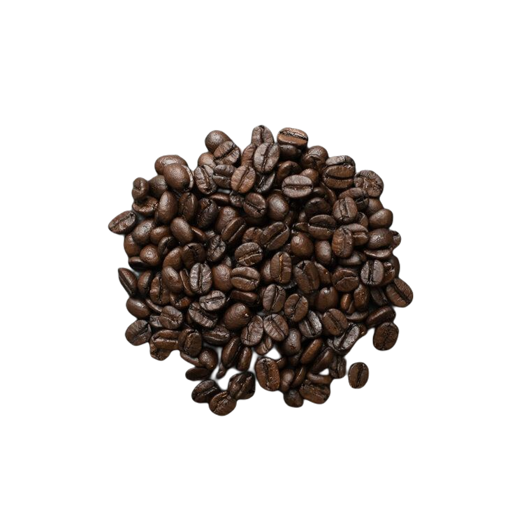

Roasted Coffee - Furan

Roasted coffee beans
Chemical structure of furan
How is it formed?
Furan is formed when foods containing constituents such as carbohydrates are thermally degraded through heating during its processing.
For example, this thermal degradation occurs when coffee grounds are roasted, leading to the presence of furan.